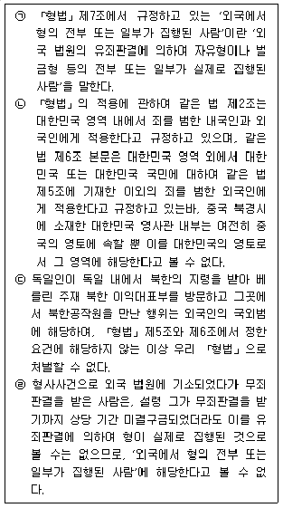
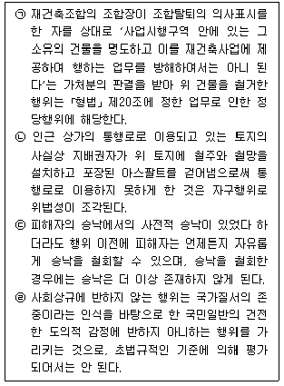
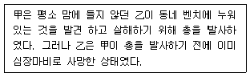
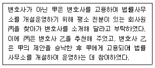
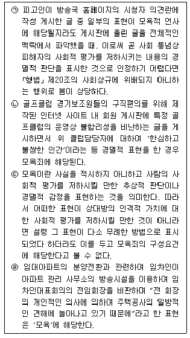

경찰공무원(순경)-형법 (2020-05-30 기출문제)
1. 「형법」의 적용범위에 관한 설명으로 적절한 것은 모두 몇 개인가? (다툼이 있는 경우 판례에 의함)

- 1개
- 2개
- 3개
- 4개
(정답률: 52%)

2. 범죄의 성립요건 중 조각되는 사유가 다른 것은? (다툼이 있는 경우 판례에 의함)
- 피고인이 동거 중인 피해자의 지갑에서 현금을 꺼내 가는 것을 피해자가 현장에서 목격하고도 만류하지 아니한 경우(「형법」상 절도죄)
- 중대장의 지시에 따라 관사를 지키고 있던 당번병인 피고인이 중대장의 처가 마중 나오라는 지시를 정당한 명령으로 오인하고 관사를 무단이탈하였는데 당번병으로서의 그 임무범위 내에 속하는 일로 오인하고, 그 오인에 정당한 이유가 있는 경우 (「군형법」상 무단이탈죄)
- 「병역법」 제88조 제1항은 국방의 의무를 실현하기 위하여 현역입영 또는 소집통지서를 받고도 정당한 사유 없이 이에 응하지 않은 사람을 처벌하는데, 피고인에게 정당한 사유가 있는 경우(「병역법」상 입영 등 기피죄)
- 사용자의 직장폐쇄가 정당한 쟁의행위로 인정되지 아니하고 다른 특별한 사정이 없어 근로자가 평소 출입이 허용되는 사업장 안에 들어가는 경우(「형법」상 주거침입죄)
(정답률: 45%)
3. 과실범에 관한 설명 중 가장 적절하지 않은 것은? (다툼이 있는 경우 판례에 의함)
- 의료과오사건에서 의사의 과실을 인정하려면 결과 발생을 예견할 수 있고 또 회피할 수 있었는데도 예견하거나 회피하지 못한 점을 인정할 수 있어야 하는데, 의사의 과실이 있는지는 같은 업무 또는 분야에 종사하는 평균적인 의사가 보통 갖추어야 할 통상의 주의의무를 기준으로 판단하여야 한다.
- 택시운전자인 피고인이 심야에 밀집된 주택 사이의 좁은 골목길이자 직각으로 구부러져 가파른 비탈길의 내리막에 누워 있던 피해자의 몸통 부위를 자동차 바퀴로 역과하여 사망에 이르게 하고 그 자리에서 도주한 경우, 위 사고 당시 시각과 사고 당시 도로 상황 등에 비추어 자동차 운전업무에 종사하는 피고인으로서는 평소보다 더욱 속도를 줄이고 전방 좌우를 면밀히 주시하여 안전하게 운전함으로써 사고를 미연에 방지할 주의의무가 있다.
- 야간에 고속도로에서 차량을 운전하는 자는 주간과는 달리 노면상태 및 가시거리상태 등에 따라 고속도로상의 제한 최고 속도 이하의 속도로 감속 서행할 주의의무가 있으므로, 야간에 선행사고로 인하여 전방에 정차해 있던 승용차와 그 옆에 서 있던 피해자를 충돌한 경우 운전자에게 제한속도 이하로 감속 운전하지 않은 과실이 있다.
- 안전배려 내지 안전관리사무에 계속적으로 종사하지 않았더라도 건물의 소유자로서 건물을 비정기적으로 수리하거나 건물의 일부분을 임대한 자는 건물의 화재가 발생하는 것을 미리 막아야 할 업무상 주의의무를 부담한다.
(정답률: 55%)
4. 결과적 가중범에 관한 설명으로 가장 적절하지 않은 것은? (다툼이 있는 경우 판례에 의함)
- 부진정결과적 가중범이란 고의에 의한 기본범죄에 기하여 중한 결과를 과실뿐만 아니라 고의로 발생케 한 경우에도 성립하는 결과적 가중범을 말한다.
- 진정결과적 가중범만 인정하면 과실로 중한 결과를 발생시킨 경우가 고의로 중한 결과를 발생시킨 경우보다 형이 높아지는 경우가 있으므로 형량을 확보하여 형의 불균형을 시정하기 위해서 부진정결과적 가중범을 인정하고 있다.
- 만약 부진정결과적 가중범의 개념을 인정하지 않는다면 현주 건조물에 방화하여 사람을 살해할 고의가 있었던 경우 현주건조물 방화죄와 살인죄의 상상적 경합범이 된다.
- 자기의 존속을 살해할 목적으로 존속이 현존하는 건조물에 방화하여 사망에 이르게 한 경우는 현주건조물방화치사죄만 성립 하고 고의범에 대하여는 별도로 죄를 구성하지 않는다.
(정답률: 57%)
5. 위법성조각사유에 관한 설명으로 적절한 것을 모두 고른 것은? (다툼이 있는 경우 판례에 의함)

- ㉠㉡
- ㉠㉢
- ㉡㉢
- ㉡㉣
(정답률: 61%)
6. 원인에 있어서 자유로운 행위에 관한 설명으로 가장 적절하지 않은 것은?
- 원인행위를 실행행위로 보는 견해에 따르면 행위와 책임의 동시 존재의 원칙에 부합하고, 책임무능력상태에서의 실행 행위는 책임이 없거나 행위라고 할 수도 없기 때문에 원인 행위 자체를 실행행위로 보지 않으면 원인에 있어서 자유로운 행위를 처벌할 수 없게 된다.
- 원인행위와 실행행위의 불가분적 연관에서 책임의 근거를 인정하는 견해에 따르면 원인설정행위는 실행행위 또는 그 착수행위가 될 수 없지만 책임능력 없는 상태에서의 실행행위와 불가분의 연관을 갖는 것이므로 원인설정행위에 책임비난의 근거가 있다.
- 원인행위를 실행행위로 보는 견해에 따르면 원인설정행위를 실행행위로 파악하기 때문에 구성요건적 행위정형성을 중시하여 죄형법정주의의 보장적 기능에 부합한다.
- 책임능력 결함상태에서의 실행행위를 책임의 근거로 인정하는 견해에 따르면 반무의식상태에서 실행행위가 이루어지는 한 그 주관적 요소를 인정할 수 있지만, 대부분의 경우에 책임능력이 인정되어 법적 안정성을 해하는 결과를 초래한다.
(정답률: 50%)
7. 다음 사례에서 불능미수의 학설에 관한 설명으로 가장 적절하지 않은 것은?

- 구객관설(절대적 불능 상대적 불능 구별설)에 의하면 결과발생이 어떠한 경우에도 개념적으로 불가능하여 위험성이 인정되지 않는다.
- 구체적 위험설에 의하면 일반인이 乙을 살아 있는 것으로 오인한 경우뿐만 아니라 乙을 사망한 것으로 인식한 경우에도 행위자 甲의 인식이 우선시되므로 위험성이 인정된다.
- 추상적 위험설에 의하면 甲은 乙을 살아 있는 사람으로 인식하고 있었으므로 위험성이 인정된다.
- 주관설에 의하면 위 사례의 경우 위험성이 인정된다.
(정답률: 47%)
8. 공범과 신분에 관한 설명으로 가장 적절하지 않은 것은? (다툼이 있는 경우 판례에 의함)
- 甲이 증인 乙을 사주하여 법정에서 위증하게 한 경우 甲은 위증죄의 교사범이 성립한다.
- 공무원 甲이 뇌물공여자로 하여금 뇌물수수죄의 공동정범 관계에 있는 생계를 같이 하는 아내 乙에게 뇌물을 공여하게 한 경우 甲은 뇌물수수죄의 공동정범이 성립한다.
- 비신분자인 아내 甲과 신분자인 아들 乙이 공동하여 남편을 살해한 경우 아내 甲과 아들 乙에게는 존속살해죄의 공동정범이 성립하고, 아내 甲은 보통살인죄의 형으로 처벌된다.
- 도박의 습벽이 있는 甲이 도박을 하고 또 상습성 없는 乙의 도박을 방조한 경우 甲은 도박죄로 처벌된다.
(정답률: 51%)
9. 다음 사례에 관한 설명으로 가장 적절하지 않은 것은? (다툼이 있는 경우 판례에 의함)

- 변호사법 제109조 제2호, 제34조 제4항은 변호사 아닌 자가 변호사를 고용하여 법률사무소를 개설 운영하는 행위를 처벌하도록 규정하고 있다.
- 甲이 변호사 乙을 고용하여 법률사무소를 개설 운영하는 행위에 있어서는 甲은 변호사 乙을 고용하고 乙은 甲에게 고용된다는 서로 대향적인 행위의 존재가 반드시 필요하다.
- 甲에게 고용되어 법률사무소의 개설 운영에 관여한 변호사 乙의 행위가 일반적인 형법 총칙상의 공범에 해당된다고 하더라도 乙을 甲의 변호사법위반죄의 공범으로 처벌할 수는 없다.
- 丙이 변호사 아닌 甲을 교사 방조한 경우에도 丙은 형법 총칙상의 공범규정이 적용될 여지가 없다.
(정답률: 39%)
10. 죄수(罪數)결정 기준에 관한 설명으로 가장 적절한 것은? (다툼이 있는 경우 판례에 의함)
- 행위표준설은 죄수의 판단을 위한 기본요소를 행위자의 행위에서 구하여 행위가 하나일 때 하나의 죄를, 행위가 다수일 때 수개의 죄를 인정하는 견해로 판례는 연속범의 경우 이 견해를 취하고 있다.
- 법익표준설은 한 사람의 행위자가 실현시킨 범죄실현의 과정에서 몇 개의 보호법익이 침해 또는 위태롭게 되었는가를 기준으로 죄의 개수를 인정하는 견해로 판례는 강간, 공갈죄의 경우 이 견해를 취하고 있다.
- 의사표준설은 행위자가 실현하려는 범죄의사의 개수에 따라서 죄의 개수를 결정하려는 견해로 행위자에게 1개의 범죄의사가 있으면 1죄를, 수개의 범죄의사가 있으면 수개의 죄를 각각 인정하게 되며, 판례는 연속범의 경우를 제외하고는 원칙적으로 이 견해를 취하고 있다.
- 구성요건표준설은 구성요건에 해당하는 회수를 기준으로 죄수를 결정하는 견해로 죄수의 결정은 법률적인 구성요건충족의 문제로 해석하여 구성요건을 1회 충족하면 일죄이고, 수개의 구성요건에 해당하면 수죄를 인정하게 되며, 판례는 조세포탈범의 죄수는 위반사실의 구성요건 충족 회수를 기준으로 1죄가 성립하는 것이 원칙이라고 하여 이 견해를 따르는 경우도 있다.
(정답률: 32%)
11. 폭행죄에 관한 설명으로 가장 적절하지 않은 것은? (다툼이 있는 경우 판례에 의함)
- 폭행죄는 반의사불벌죄로서 개인적 법익에 관한 죄이고 피해자가 사망한 후 그 상속인이 피해자를 대신하여 처벌불원의 의사표시를 할 수 있다.
- 「형법」 제260조에 규정된 폭행죄의 폭행이란 소위 사람의 신체에 대한 유형력의 행사를 가리키며, 그 유형력의 행사는 신체적 고통을 주는 물리력의 작용을 의미하므로 신체의 청각기관을 직접적으로 자극하는 음향도 경우에 따라서는 유형력에 포함 될 수 있다.
- 거리상 멀리 떨어져 있는 사람에게 전화기를 이용하여 전화하면서 고성을 내거나 그 전화 대화를 녹음 후 듣게 하는 경우에 특수한 방법으로 수화자의 청각기관을 자극하여 그 수화자로 하여금 고통을 느끼게 할 정도의 음향을 이용했다면 신체에 대한 유형력의 행사로 볼 수 있다.
- 피해자에게 근접하여 욕설을 하면서 때릴 듯이 손발이나 물건을 휘두르거나 던지는 행위는 직접 피해자의 신체에 접촉하지 않았다고 하여도 폭행에 해당한다.
(정답률: 60%)
12. 모욕죄에 관한 설명으로 적절한 것을 모두 고른 것은? (다툼이 있는 경우 판례에 의함)

- ㉠㉡
- ㉠㉢
- ㉡㉢
- ㉢㉣
(정답률: 60%)
13. 경매 입찰방해죄에 관한 설명으로 가장 적절하지 않은 것은? (다툼이 있는 경우 판례에 의함)
- 경매 입찰방해죄는 최소한 적법하고 유효한 입찰 절차의 존재가 전제되어야 하지만, 처음부터 입찰절차가 존재하였다 할 수 없는 경우에도 입찰방해죄는 성립할 수 있다.
- 입찰자 일부와 담합이 있고 그에 따른 담합금이 수수되었다 하더라도 입찰시행자의 이익을 해함이 없이 자유로운 경쟁을 한 것과 동일한 결과로 되는 경우에는 입찰의 공정을 해할 위험이 없다.
- 입찰방해죄는 위계 또는 위력 기타의 방법으로 입찰의 공정을 해하는 경우에 성립하는 위태범으로서, 입찰의 공정을 해할 행위를 하면 그것으로 족하고 현실적으로 입찰의 공정을 해한 결과가 발생할 필요는 없다.
- 담합행위가 가장경쟁자를 조작하여 실시자의 이익을 해하는 것이 아니라도 실질적으로 단독입찰을 하면서 경쟁입찰인 것처럼 가장하여 그 입찰가격으로 낙찰을 받았다면 입찰방해죄가 성립한다.
(정답률: 50%)
14. 주거침입죄에 관한 설명으로 가장 적절하지 않은 것은? (다툼이 있는 경우 판례에 의함)
- 주거침입죄는 사실상의 주거의 평온을 보호법익으로 하는 것이므로 그 거주자 또는 간수자는 건조물 등에 거주 또는 간수할 법률상 권한이 있어야 한다.
- 건조물의 이용에 기여하는 인접의 부속 토지라고 하더라도 인적 또는 물적 설비 등에 의한 구획 내지 통제가 없어 통상의 보행으로 그 경계를 쉽사리 넘을 수 있는 정도라고 한다면 일반적으로 외부인의 출입이 제한된다는 사정이 객관적으로 명확하게 드러났다고 보기 어려우므로, 이는 다른 특별한 사정이 없는 한 주거침입죄의 객체에 속하지 않는다.
- 복수의 주거권자가 있는 경우에 그 중 한 사람의 허락을 받아 주거에 들어갔다 하더라도 다른 거주자의 의사에 직접 간접으로 반하는 때에는 주거침입죄가 성립한다.
- 일반인에게 출입이 허용된 건조물일지라도 범죄의 목적으로 들어가는 경우에는 주거침입죄가 성립될 수 있다.
(정답률: 47%)
15. 재산죄에 관한 설명으로 가장 적절하지 않은 것은? (다툼이 있는 경우 판례에 의함)
- 「형법」상의 점유란 현실적으로 어떠한 재물을 지배하는 순수한 사실상의 관계를 말하는 것으로서 「민법」상의 점유와 동일하다.
- 절도죄에서의 절취는 폭행 협박에 의하지 않고 타인점유의 재물을 점유자의 의사에 반하여 그 점유를 배제하고 자기 또는 제3자의 점유하에 옮기는 것을 말한다.
- 동업자, 조합원, 부부 사이와 같이 수인이 대등하게 재물을 점유하는 공유물, 합유물 그리고 총유물의 경우에도 공동점유자 상호간에 점유의 타인성이 인정되므로 그 중 1인이 다른 공동 점유자의 점유를 배제하고 단독점유로 옮긴 때에는 절도죄가 성립한다.
- 절도죄의 성립에 필요한 불법영득의 의사라 함은 타인의 재물에 대해서 소유자와 유사한 지배력을 행사하여 이용 처분하려는 의사를 말하는 것으로, 영구적으로 그 물건의 경제적 이익을 보유할 의사는 필요 없고, 일시적이어도 무방하다.
(정답률: 54%)
16. 횡령죄에 관한 설명으로 가장 적절하지 않은 것은? (다툼이 있는 경우 판례에 의함)
- 부동산의 공유자 중 1인이 다른 공유자의 지분을 임의로 처분 하거나 임대하여도 그에게는 그 처분권능이 없어 횡령죄가 성립하지 않게 되는데, 구분소유자 전원의 공유에 속하는 공용부분인 지하주차장 일부를 그 중 1인이 독점 임대하고 수령한 임차료를 임의로 소비한 경우도 마찬가지다.
- 「국민연금법」제64조 등의 규정에 의하여 사용자는 매월 임금에서 국민연금 보험료 중 근로자가 부담할 기여금을 원천공제하여 근로자를 위하여 보관하고, 국민연금관리공단에 위 보험료를 납부하여야 할 업무상 임무를 부담하게 되며, 사용자가 이에 위배하여 근로자의 임금에서 원천공제한 기여금을 위 공단에 납부하지 아니하고, 나아가 이를 개인적 용도로 소비하였다면 업무상횡령죄에 해당한다.
- 보관자의 지위에 있는 공동명의 예금채권자가 피해자 조합원들이 제기한 소송으로 인하여 조합이 입게 되는 손해에 대한 구상금 채권의 집행 확보를 위하여 피해자 조합원들에 대하여 예금계좌에 초과로 입금된 개발부담금의 반환을 거부한 경우에는 불법영득 의사가 인정되어 횡령죄가 성립한다.
- 아파트 입주자대표회의 회장이 아파트 특별수선충당금을 구조진단 견적비 및 손해배상청구소송의 변호사 선임료로 사용하였으나, 당시에는 특별수선충담금의 용도외 사용이 관리규약에 의해서만 제한되고 있어서 구분소유자들 또는 입주민들로부터 포괄적인 동의를 얻어 특별수선충당금을 위탁의 취지에 부합하는 용도에 사용한 것으로 볼 수 있다면 업무상횡령죄에 해당하지 않는다.
(정답률: 45%)
17. 배임죄에 관한 설명으로 가장 적절하지 않은 것은? (다툼이 있는 경우 판례에 의함)
- 피고인이 인쇄기를 甲에게 양도하기로 하고 계약금 및 중도금을 수령하였음에도 이를 자신의 채권자 乙에게 기존 채무변제에 갈음하여 양도한 경우 배임죄가 성립하지 않는다.
- 피고인이 그 소유의 에어컨을 피해자에게 양도담보로 제공하고 점유개정의 방법으로 점유하고 있다가 다시 이를 제3자에게 양도담보로 제공하고 역시 점유개정의 방법으로 점유를 계속한 경우 배임죄를 구성하지 않는다.
- 동산에 대하여 점유개정의 방법으로 이중 양도담보를 설정한 경우 처음의 양도담보권자에게 이중으로 양도담보 제공을 하지 않기로 특약하였다면 배임죄를 구성한다.
- 채무자가 그 소유의 동산에 대하여 점유개정의 방식으로 채권자들에게 이중의 양도담보 설정계약을 체결한 후 양도담보 설정자가 목적물을 임의로 제3자에게 처분하였다면 뒤의 채권자에 대한 관계에서 배임죄가 성립하지 않는다.
(정답률: 47%)
18. 범죄단체 등 조직죄에 관한 설명으로 가장 적절하지 않은 것은? (다툼이 있는 경우 판례에 의함)
- 범죄단체 등 조직죄는 사형, 무기 또는 장기 4년 이상의 징역에 해당하는 범죄를 범할 목적이 있어야 한다.
- 「형법」제114조 소정의 범죄를 목적으로 하는 단체라 함은 특정 다수인이 일정한 범죄를 수행한다는 공동목적 아래 이루어진 계속적인 결합체로서 그 단체를 주도하는 최소한의 통솔체제를 갖추고 있음을 요한다.
- 피고인들이 총책을 중심으로 간부급 조직원들과 상담원들, 현금 인출책 등으로 구성된 보이스피싱 사기 조직을 구성하고 이에 가담하여 조직원으로 활동한 경우는 「형법」상의 범죄단체에 해당한다.
- 범죄단체 가입행위 또는 범죄단체 구성원으로서 활동하는 행위와 사기행위는 포괄일죄의 관계에 있다.
(정답률: 53%)
19. 문서에 관한 죄의 설명으로 가장 적절하지 않은 것은? (다툼이 있는 경우 판례에 의함)
- 타인의 주민등록증사본의 사진란에 자신의 사진을 붙여 복사한 행위와 타인의 주민등록증을 복사기와 컴퓨터를 이용하여 전혀 별개의 주민등록증사본을 창출시킨 행위는 공문서위조에 해당한다.
- 식당의 주 부식 구입 업무를 담당하는 공무원 甲이 계약 등에 의하여 공무소의 주 부식의 구입 검수 업무 등을 담당하는 조리장 영양사 등의 명의를 위조하여 검수결과보고서를 작성한 경우 공문서위조죄에 해당한다.
- 세금계산서상의 공급받는 자는 그 문서 내용의 일부에 불과할 뿐 세금계산서의 작성명의인은 아니라 할 것이니, 공급받는 자란에 임의로 다른 사람을 기재하였다 하여 그 사람에 대한 관계에서 사문서위조죄가 성립된다고 할 수 없다.
- 사문서변조죄는 권한없는 자가 이미 진정하게 성립된 타인 명의의 문서 내용에 대하여 동일성을 해하지 않을 정도로 변경을 가하여 새로운 증명력을 작출케 함으로써 공공적 신용을 해할 위험성이 있을 때 성립한다. 따라서 이미 진정하게 성립된 타인 명의의 문서가 존재하지 않는다면 사문서변조죄가 성립할 수 없다.
(정답률: 40%)
20. 범인은닉 도피죄에 관한 설명으로 가장 적절하지 않은 것은? (다툼이 있는 경우 판례에 의함)
- 주점 개업식날 찾아 온 범인에게 ‘도망다니면서 이렇게 와 주니 고맙다. 항상 몸조심하고 주의하여 다녀라. 열심히 살면서 건강에 조심해라’고 말한 것은 단순히 안부를 묻거나 통상적인 인사말에 불과하므로 범인도피죄에 해당하지 않는다.
- 범인이 타인으로 하여금 허위의 자백을 하게 하는 등으로 범인 도피죄를 범하게 하는 경우와 같이 그것이 방어권의 남용으로 볼 수 있을 때에는 범인도피교사죄에 해당할 수 있다.
- 범인도피죄는 그 자체로 도피시키는 것을 직접적인 목적으로 하였다고 보기 어려운 행위를 한 결과 간접적으로 범인이 안심 하여 도피할 수 있게 한 경우도 포함된다.
- 범인도피죄는 범인을 도피하게 함으로써 기수에 이르지만 범인 도피행위가 계속되는 동안에는 범죄행위도 계속되고 행위가 끝날 때 비로소 범죄행위가 종료되며, 공범자의 범인도피행위 도중에 그 범행을 인식하면서 그와 공동의 범의를 가지고 기왕의 범인도피상태를 이용하여 스스로 범인도피행위를 계속한 자에 대하여는 범인도피죄의 공동정범이 성립한다.
(정답률: 44%)
1. 국내에서 범죄가 발생한 경우
2. 국외에서 범죄가 발생하였지만 국내에서 범행자를 체포한 경우
3. 국외에서 범죄가 발생하였지만 국내에서 범행자를 체포하지 못한 경우
4. 국외에서 범죄가 발생하였지만 국내에서 범행자를 체포할 수 있는 경우 (예: 국제형사재판소에서 범죄를 수사하는 경우)
형법은 국내에서 발생한 범죄뿐만 아니라 국외에서 발생한 범죄에 대해서도 적용됩니다. 국외에서 범죄가 발생하였지만 국내에서 범행자를 체포하지 못한 경우에도 국내에서 범행자를 체포할 수 있는 경우에는 형법이 적용됩니다. 이는 국제형사재판소에서 범죄를 수사하는 경우에도 마찬가지입니다.